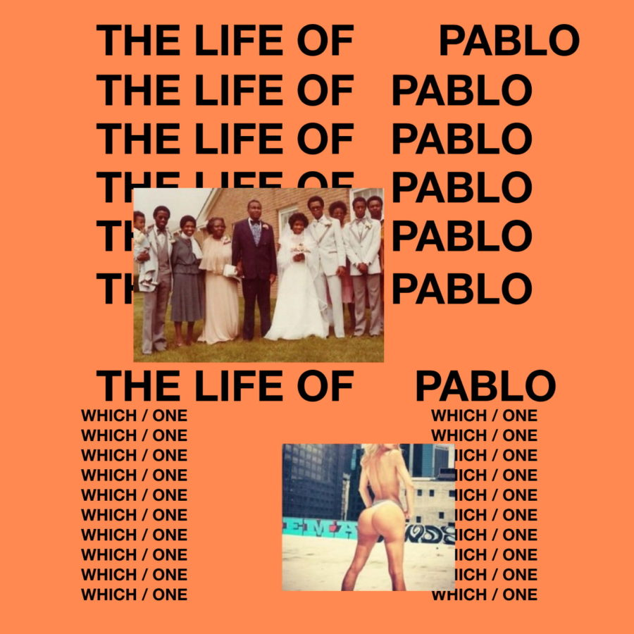

The Life of Pablo -Kanye West
Para muchos The Life of Pablo seguramente no merecerá estar tan arriba de la lista, pero para mí, es uno de los mejores conceptos creativos que ha logrado West, así como una experiencia de rap que está en un nivel muy elevado,